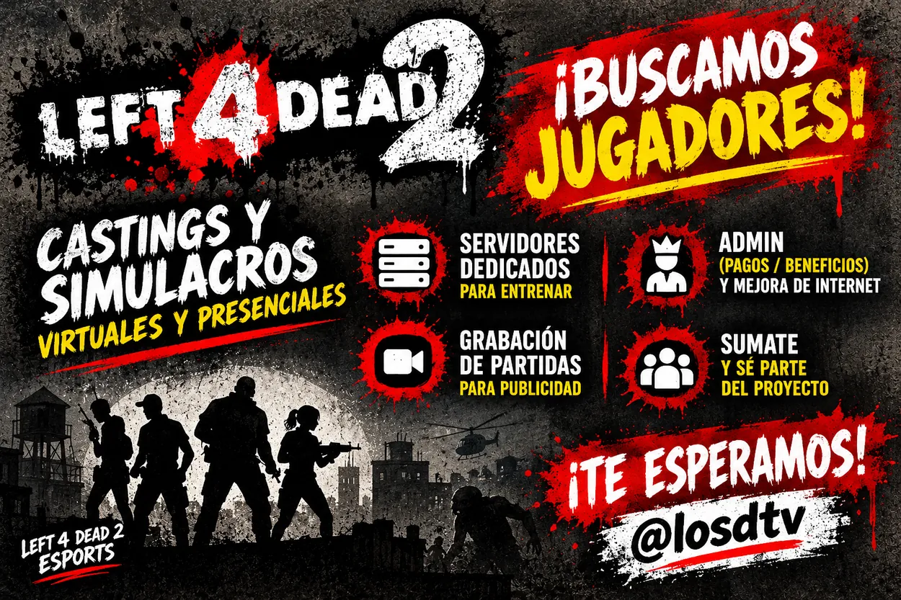
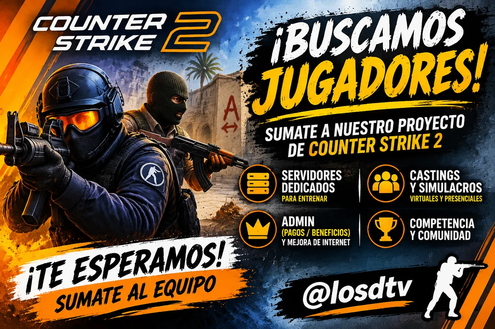
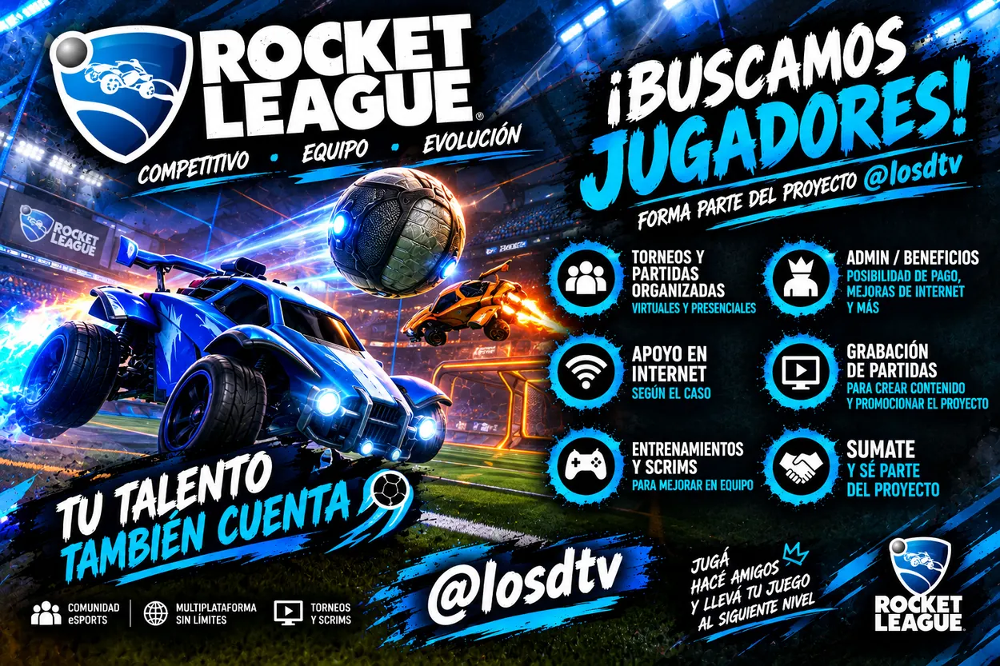
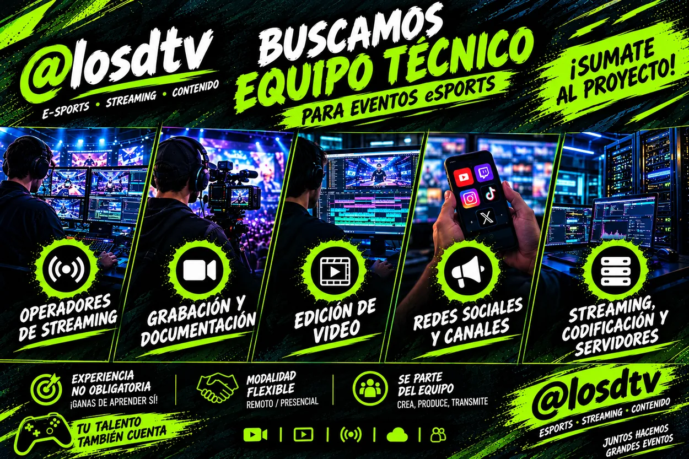
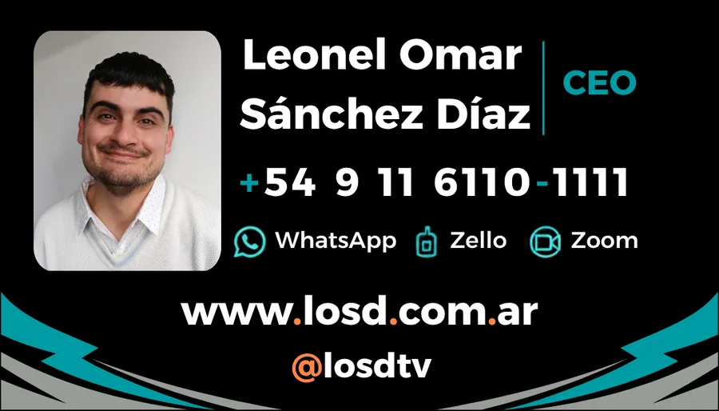

LOSD EDITORIALED. / 001
EDICIONES DIGITALES Y FÍSICAS↗
LOSD conecta tecnología, entretenimiento, conectividad y educación en un solo ecosistema. Ideas que se convierten en experiencias, herramientas y comunidad.

Estamos desarrollando distintas unidades que se conectan entre sí para acercarte contenido útil, servicios y nuevas oportunidades.
Conocé las áreas ↘Publicaciones para aprender, inspirarte y estar al día. En papel o en pantalla, con contenidos para distintos intereses y edades.
Ediciones impresas de entre 10 y 20 páginas, junto con publicaciones digitales para consultar desde cualquier dispositivo.
Informática, electrónica, tendencias asiáticas, bienestar, espiritualidad, cultura y novedades que vale la pena compartir.
En 1 de cada 1.000 ejemplares impresos habrá un QR dorado con acceso a premios sorpresa y sorteos exclusivos.
«Sí, leíste bien. Vas al kiosco, te llevás tu revista y por ahí volvés a casa con un premio en la mano».MECÁNICA Y CONDICIONES SE PUBLICARÁN CON CADA PROMOCIÓN.
Una comunidad para jugar, competir y encontrarse. Estamos preparando torneos, coberturas y espacios para armar equipo.



Soluciones, soporte y aprendizaje técnico sin complicaciones innecesarias. Lo importante es entender, resolver y hacerlo funcionar.
Soporte, redes, desarrollo y herramientas de inteligencia artificial aplicadas al trabajo, el estudio y los negocios.
Consultar novedades ↗Contenidos y servicios sobre instalaciones monofásicas y trifásicas (220/380 V), UPS, inversores y sistemas de respaldo.
Conocer el área ↗Fibra óptica, coaxial, UTP, conectividad y conceptos esenciales para hogares, comercios y proyectos.
Ver conectividad ↗Electrónica básica e intermedia explicada paso a paso, con ejemplos que puedas llevar a la práctica.
Ir a Academia ↗Los trabajos eléctricos y de infraestructura que lo requieran deberán ser realizados por personal idóneo y habilitado, conforme a la normativa aplicable.
Formación pensada para adquirir herramientas reales, actualizar conocimientos y abrir nuevas oportunidades.
Estamos explorando una plataforma de contenidos y transmisiones con una experiencia propia, pensada para descubrir nuevas historias y aprender desde un mismo lugar.
Servicio en etapa de planificación. La oferta final dependerá de acuerdos, licencias, disponibilidad técnica y condiciones comerciales.
Estamos trabajando en convenios y alternativas de conectividad para hogares, profesionales y comercios, con una mirada local y proyección regional.
Diseño de enlaces redundantes: si falla la conexión principal, una alternativa disponible puede tomar el relevo, según la infraestructura contratada.
Equipamiento y administración para implementar puntos de acceso y redes comunitarias.
Queremos construir una red de comercios, kioscos y canillitas que acerquen las publicaciones LOSD a cada barrio.
Estamos preparando el equipo para el lanzamiento. Buscamos perfiles creativos, técnicos y profesionales con ganas de construir.

También podés escribir a rrhh@losd.com.ar.
¿Tenés una consulta, una propuesta o querés recibir novedades? Dejanos tus datos y elegí cómo querés participar.

Te contactaremos con novedades del área que te interese.